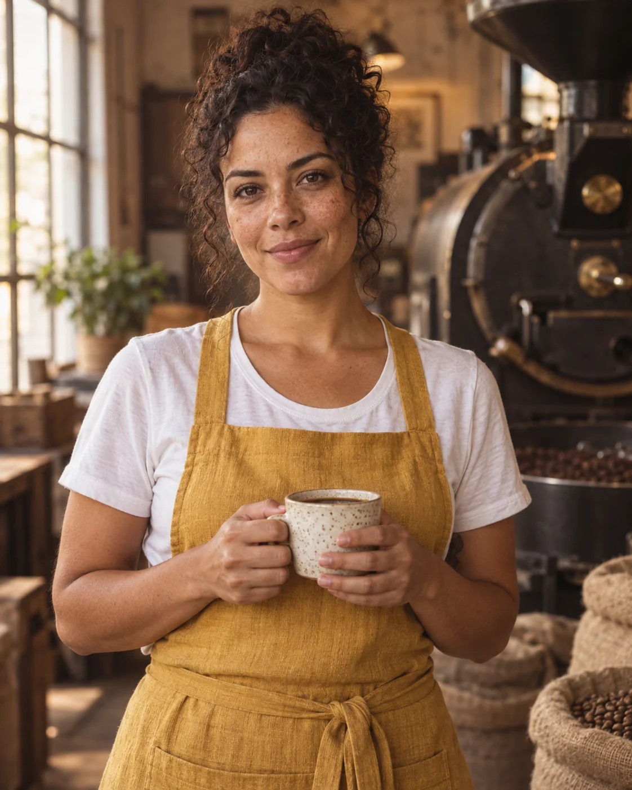
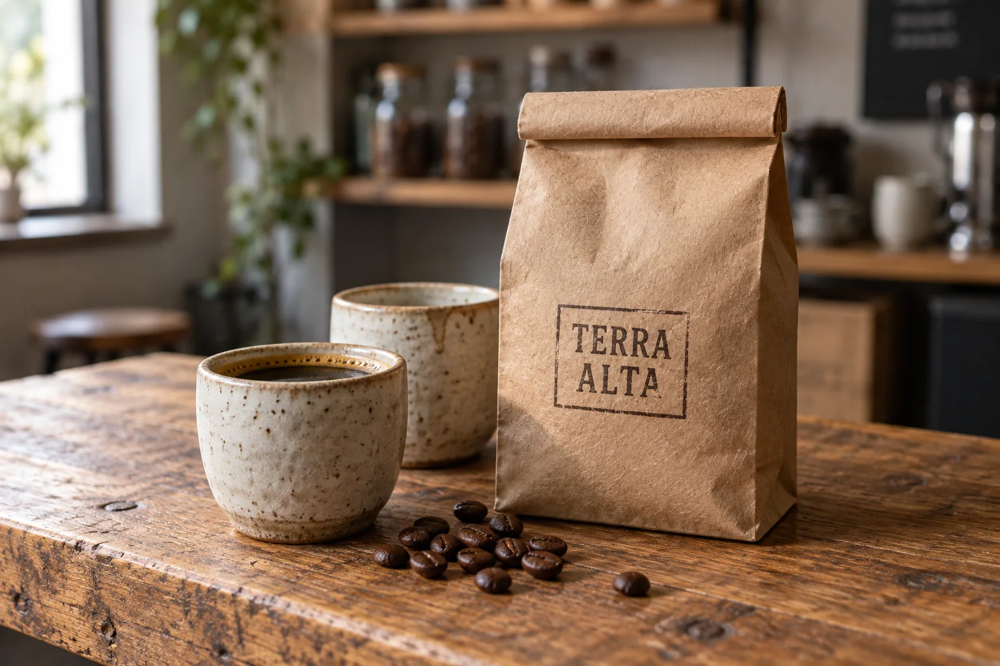
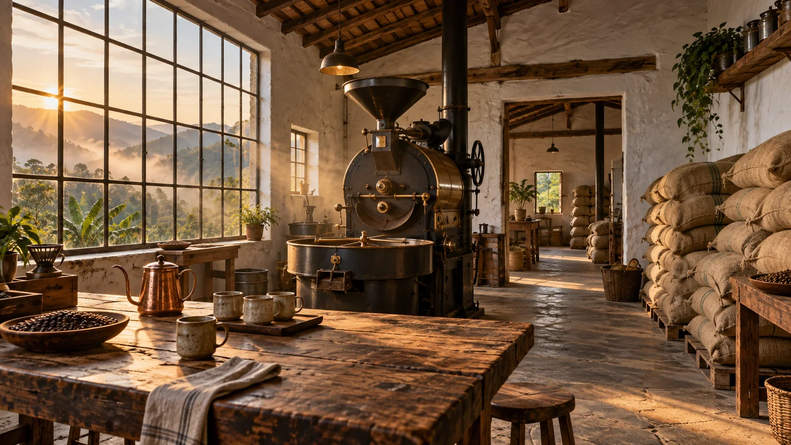
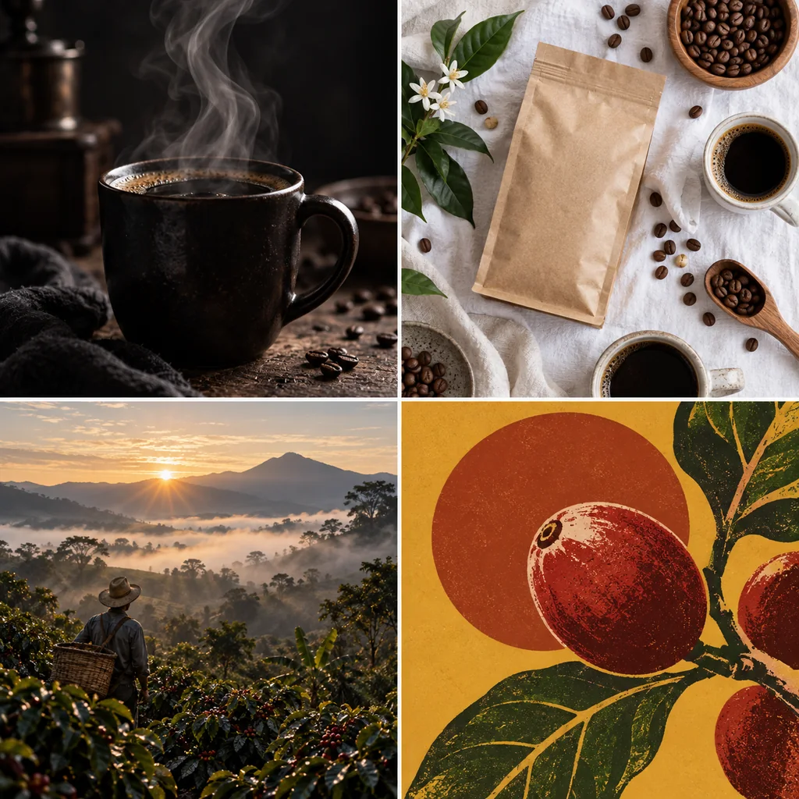
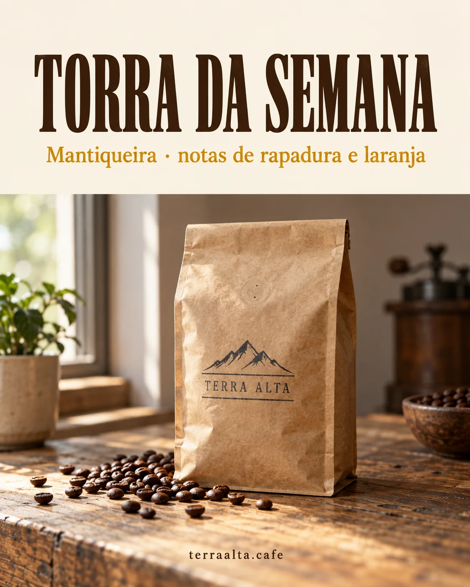
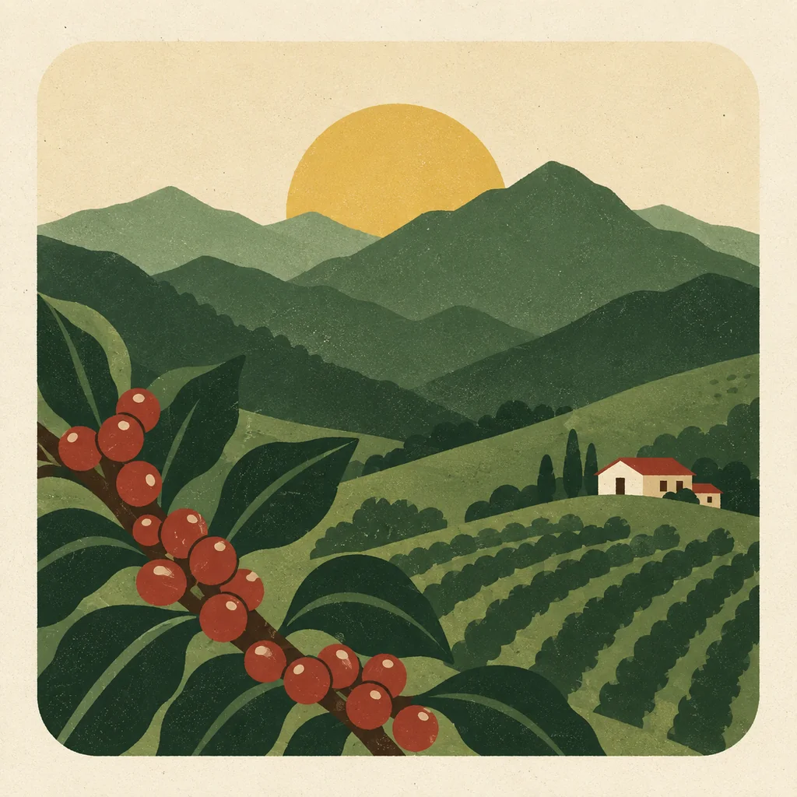
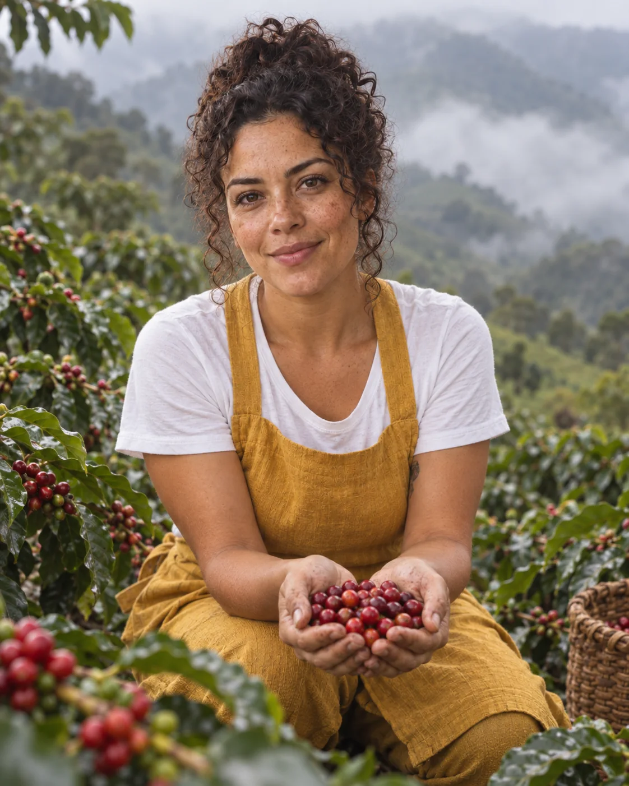
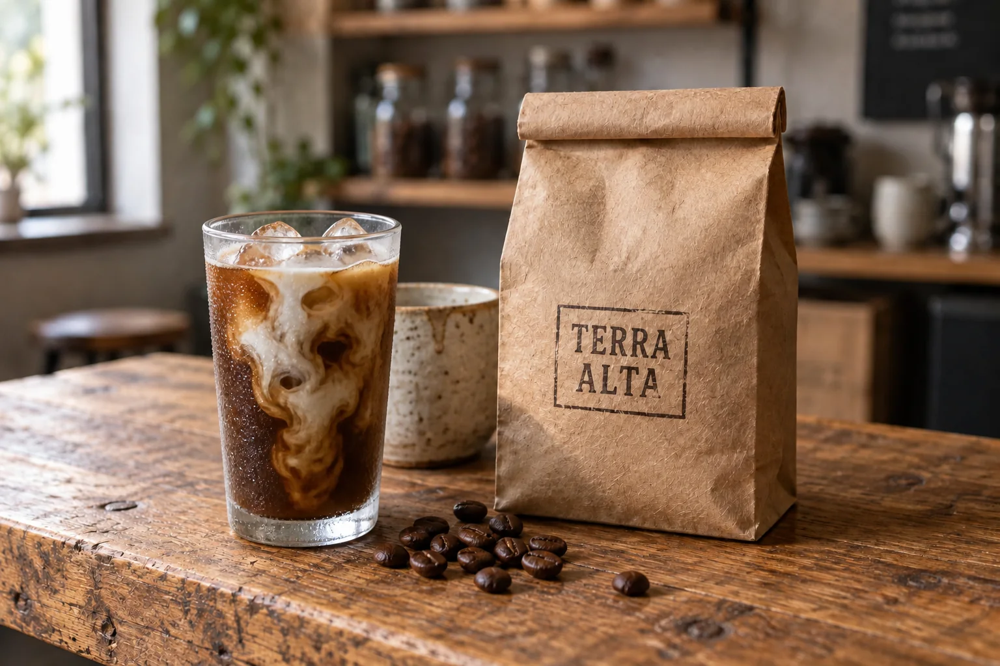
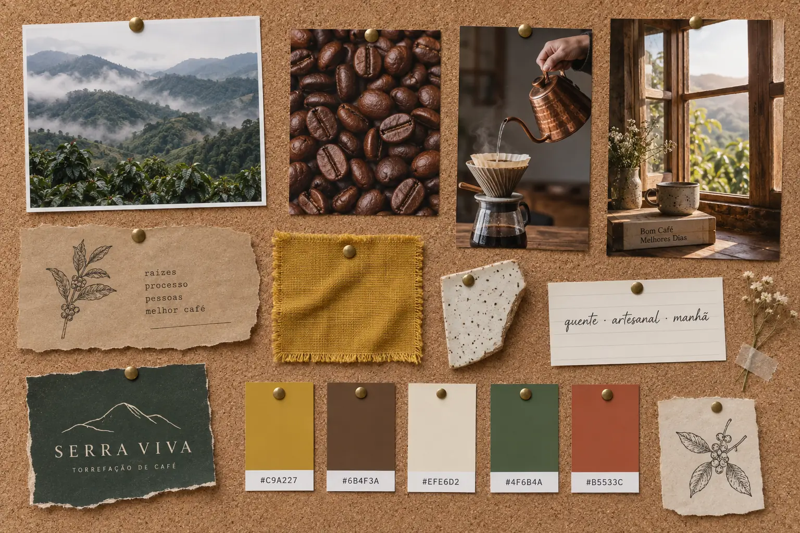

Quem começa a gerar imagens com IA costuma travar antes do primeiro prompt: são dezenas de sites, cada um com a sua lista de modelos, planos, créditos e botões, e todo mês aparece um “novo melhor”. A saída não é testar todos. É entender o que existe em cada categoria, escolher duas ou três ferramentas que cobrem o trabalho que você quer fazer e ficar nelas tempo suficiente para ganhar mão. Este módulo é um mapa, não uma lista para decorar.
E mapa sem destino não serve para nada. Por isso, a partir de agora, você tem um cliente. A Terra Alta Cafés é uma torrefação pequena (e fictícia) na Serra da Mantiqueira. Ela vai precisar de três tipos de imagem ao longo do curso — pessoa, produto e lugar — e cada tipo puxa critérios diferentes na hora de escolher ferramenta:

Prompt usado
Waist-up portrait of Lia, a Brazilian barista in her early 30s with curly dark hair tied up, light-brown skin and freckles, wearing a mustard-yellow linen apron over a white t-shirt, standing in a rustic coffee roastery, arms relaxed, holding a speckled cream ceramic cup with both hands at chest height, looking straight into the camera with a calm, confident half-smile. Shot on an 85mm lens at f/2, eye level. Soft morning window light from the left, warm 3500K, gentle fill on the right side of her face. Natural skin with visible pores and freckles, linen texture on the apron. Background softly blurred: a vintage cast-iron coffee roaster and burlap sacks. No text, signs or lettering anywhere. Natural editorial portrait photography, subtle 35mm film grain, evoking warmth and craft.

Prompt usado
Product photograph of a kraft-paper coffee bag with a folded top and a hand-stamped dark-brown ink label reading 'TERRA ALTA', standing on a worn oak counter next to two hand-thrown stoneware cups with a speckled matte cream glaze, one filled with black coffee with a thin golden crema. A few roasted beans with an oily sheen scattered in front. Shot on a 90mm lens at f/4, slightly above eye level. Soft side window light from the left, 4000K, gentle shadows falling to the right. Rough recycled kraft fibers, visible glaze speckles and drip line. Bag slightly right of center, softly blurred café shelves in the background. No other text or logos. Clean contemporary editorial product photography.

Prompt usado
Wide establishing shot of an empty rustic coffee roastery in the Brazilian mountains at dawn: a tall multi-pane window on the left with misty green hills outside, a vintage black cast-iron drum coffee roaster with brass details in the center, stacked burlap coffee sacks along the right wall, a long worn wooden counter with ceramic cups and a copper kettle in the foreground, exposed wooden ceiling beams, whitewashed walls. Shot on a 24mm lens at f/8, eye level, deep focus. Soft golden morning light streaming through the window, warm 3200K, thin haze and dust in the light beams. Textures: rough plaster, oiled wood, coarse jute, aged iron. No people, no text, no signs, no lettering anywhere. Architectural interior photography, natural color grade, evoking quiet anticipation before the first roast.
O projeto do curso em três imagens. Lia é a barista que representa a marca: cabelo escuro cacheado preso, pele morena clara, sardas, avental de linho mostarda sobre camiseta branca — essa descrição vai se repetir, palavra por palavra, em todos os módulos. O produto é o pacote kraft com o carimbo “TERRA ALTA” e as xícaras de cerâmica salpicada. O espaço é a torrefação: janela grande, torrador antigo de ferro e sacas de juta.
1Ferramenta não é modelo
O que é
Por que aprender
Essa separação evita dois erros caros. O primeiro é trocar de site toda vez que uma imagem decepciona — quando bastava trocar de modelo dentro do mesmo site, ou reescrever o prompt. O segundo é achar que “aprendeu uma ferramenta” quando, na verdade, aprendeu só o jeito de um modelo responder. Os modelos mudam de versão várias vezes por ano; o raciocínio de diretor que você vai construir neste curso não muda.
Na prática, quando alguém diz “fiz no Freepik” ou “fiz no OpenArt”, a pergunta útil é: com qual modelo? A mesma plataforma agregadora pode entregar um retrato fotográfico impecável com um modelo e um desenho infantil com outro.
Conceitos-chave em ação
Ferramenta × modelo: exemplos
| Ferramenta | Tipo | Modelos que ela usa (confira na ferramenta — muda) |
|---|---|---|
| ChatGPT | assistente de chat com imagem | GPT Image (da própria OpenAI) |
| Gemini | assistente de chat com imagem | Nano Banana e sucessores (do Google) |
| Midjourney | gerador dedicado | modelos próprios, numerados por versão |
| OpenArt, Freepik, Krea | agregadoras / hubs | vários: modelos próprios + Flux, Seedream, Nano Banana, GPT Image e outros |
2O mapa: playgrounds gratuitos e plataformas pro
O que é
Mapa de categorias (preços e limites mudam: confira na ferramenta)
| Categoria | Exemplos | Onde brilha | Onde fica devendo |
|---|---|---|---|
| Assistente de chat com imagem (gratuito com limites) | ChatGPT, Gemini | conceitos rápidos, edição conversada (“troque só o fundo”), texto dentro da imagem; também escreve prompts para outras ferramentas | poucos controles técnicos (sem seed, sem slider de estilo) |
| Design rápido | Microsoft Copilot / Designer | posts, capas, cards e thumbnails prontos a partir de modelos de layout | pouco controle de direção fotográfica |
| Playground freemium | Playground e similares | testar muitos estilos e modelos, presets, treinar o olho | créditos gratuitos acabam; recursos de produção limitados |
| Hub de modelos e estilos | OpenArt | escolher entre muitos modelos, galeria gigante de referências, fluxos mais avançados com o tempo | excesso de opções confunde quem ainda não tem critério |
| Plataforma comercial | Freepik | peças de marketing limpas, banco de imagens e modelos de layout, fluxos em nós para séries consistentes | menos espaço para experimentação estranha |
| Estúdio de design | Krea | texturas, padrões, fundos, elementos gráficos, retratos em close; geração em tempo real | cenas amplas e planos gerais tendem a render menos |
| Gerador dedicado | Midjourney | estética forte, referências de estilo e personagem, parâmetros de estilização e variação | só texto corrido (não entende JSON); edição mais limitada que nos chats |
| Realismo e tendências | Higgsfield | fotorrealismo de estúdio, moda, editorial, efeitos visuais do momento | foco em tendência pode datar rápido |
| Agregador econômico | Syntx e similares | acesso a vários modelos gastando menos | interface mais simples, menos recursos |
Por que aprender
As gratuitas são o lugar certo para os primeiros 20 ou 30 prompts: você erra de graça e aprende o que as palavras fazem. Quando começar a sentir falta de algo específico — “queria travar o rosto da Lia”, “queria testar o mesmo prompt em três modelos”, “queria gerar 20 variações com a mesma proporção” — é sinal de que chegou a hora de uma plataforma pro. Migrar antes disso é pagar por botões que você ainda não sabe usar.
Um uso que vale ouro desde o primeiro dia: o assistente de chat como roteirista de prompt. Você descreve a ideia bagunçada em português, do jeito que falaria com um colega, e pede para ele devolver um prompt organizado em camadas para colar na ferramenta de imagem. Isso acaba com o medo da página em branco.
Conceitos-chave em ação

Prompt usado
A 2x2 grid of four quick concept thumbnails exploring different visual directions for a mountain coffee brand hero image, separated by thin white gutters: top-left, a moody close-up of steam rising from a black coffee cup in dark low-key light; top-right, a bright airy flat lay of a kraft coffee bag, cups and beans on white linen; bottom-left, a wide misty coffee farm landscape at sunrise with a lone farmer; bottom-right, a bold graphic poster-style illustration of a coffee cherry in mustard and terracotta. Each thumbnail a distinct mood and color palette, rough and exploratory, no text.
O trabalho típico de playground: quatro direções bem diferentes para a imagem principal da Terra Alta, geradas rápido e sem compromisso, só para descobrir qual caminho conversa com a marca. Nenhuma delas é final — servem para decidir o que dirigir com cuidado depois.
3Escolha pelo trabalho, não pelo hype
O que é
“Qual é a melhor IA de imagem?” é a pergunta errada. A certa é: melhor para qual trabalho? Liste as peças que o seu cliente vai precisar e avalie as ferramentas por estes cinco critérios:
Os cinco critérios
| Critério | Pergunta de teste | Sinal de alerta |
|---|---|---|
| Fotorrealismo | Um retrato em close passa por foto de verdade? | pele de cera, dentes perfeitos demais, mãos com dedos a mais |
| Texto na imagem | Consigo um título curto em português, escrito certo e legível? | letras inventadas, acentos errados, palavras duplicadas |
| Consistência de personagem | A mesma pessoa se mantém em cenas diferentes? | rosto, idade ou cabelo mudam a cada geração |
| Edição | Consigo mudar só uma parte e manter o resto? | a edição “refaz” a imagem inteira e muda a pessoa |
| Estilo | Chega a estéticas diferentes (ilustração, filme, 3D) com controle? | tudo sai com a mesma cara, ou o estilo engole o assunto |
Por que aprender
A Terra Alta precisa de retrato, foto de produto, post com texto e arte de rótulo. São quatro trabalhos que puxam critérios diferentes. Uma ferramenta que faz retratos lindos mas escreve “TERA ATLA” no pacote não serve para as peças com texto; uma que desenha ótimos rótulos pode não segurar o rosto da Lia de uma cena para outra.
Conceitos-chave em ação
Prompt usado
Waist-up portrait of Lia, a Brazilian barista in her early 30s with curly dark hair tied up, light-brown skin and freckles, wearing a mustard-yellow linen apron over a white t-shirt, standing in a rustic coffee roastery, arms relaxed, holding a speckled cream ceramic cup with both hands at chest height, looking straight into the camera with a calm, confident half-smile. Shot on an 85mm lens at f/2, eye level. Soft morning window light from the left, warm 3500K, gentle fill on the right side of her face. Natural skin with visible pores and freckles, linen texture on the apron. Background softly blurred: a vintage cast-iron coffee roaster and burlap sacks. No text, signs or lettering anywhere. Natural editorial portrait photography, subtle 35mm film grain, evoking warmth and craft.
Prompt usado
Product photograph of a kraft-paper coffee bag with a folded top and a hand-stamped dark-brown ink label reading 'TERRA ALTA', standing on a worn oak counter next to two hand-thrown stoneware cups with a speckled matte cream glaze, one filled with black coffee with a thin golden crema. A few roasted beans with an oily sheen scattered in front. Shot on a 90mm lens at f/4, slightly above eye level. Soft side window light from the left, 4000K, gentle shadows falling to the right. Rough recycled kraft fibers, visible glaze speckles and drip line. Bag slightly right of center, softly blurred café shelves in the background. No other text or logos. Clean contemporary editorial product photography.

Prompt usado
Instagram feed post design (4:5) for a specialty coffee roaster. Top 40% of the layout: warm cream background with a bold condensed serif headline in dark brown reading exactly 'TORRA DA SEMANA', below it a smaller line in mustard yellow reading exactly 'Mantiqueira · notas de rapadura e laranja'. Bottom 60%: a realistic photo of a kraft-paper coffee bag with a hand-stamped label reading 'TERRA ALTA' on a worn oak counter with scattered roasted beans, soft window light from the left. Small footer text in dark brown reading exactly 'terraalta.cafe'. Generous margins, clean editorial magazine layout, all text sharp, correctly spelled and legible, no other text.

Prompt usado
Flat vector-style illustration for a coffee bag label: layered rolling mountains of the Serra da Mantiqueira in muted greens, a pale mustard-yellow sun rising behind them, a coffee branch with glossy dark-green leaves and ripe red coffee cherries framing the lower left corner, a small farmhouse on a hill. Limited palette of six colors: forest green, sage, mustard yellow, terracotta red, cream, dark brown. Subtle paper grain texture, gentle risograph-like print imperfections, simple geometric shapes, no outlines, no gradients. Centered composition inside a soft rounded square with cream margins. No text or lettering.
Quatro peças do mesmo cliente, cada uma testando um critério. No retrato, repare na pele com poros e sardas. No produto, nas fibras do kraft e no esmalte salpicado. No post, confira letra por letra: “TORRA DA SEMANA”, o subtítulo com o acento de “rapadura e laranja” e o rodapé saíram corretos — é o teste mais rápido para descobrir se um modelo serve para peças com texto. Repare também no que não foi pedido: no post, o pacote ganhou um desenho de montanha no carimbo e outro formato; manter o produto igual entre peças é um teste à parte (consistência). No rótulo, a paleta limitada de verdes, mostarda e terracota ficou coerente e o resultado não escorregou para o visual de foto. Todas foram feitas com um único modelo (GPT Image); ao avaliar a sua ferramenta, rode essas mesmas quatro tarefas nela.
✓ Escolha com critério
- listar as 4–5 peças que o cliente precisa
- rodar as mesmas tarefas em 2 ferramentas candidatas
- anotar onde cada uma falhou, com o prompt usado
✗ Escolha pelo hype
- assinar a ferramenta do vídeo viral da semana
- julgar por uma imagem bonita da galeria (feita por outra pessoa, com outro prompt)
- trocar de ferramenta a cada resultado ruim
4Consistência e edição: os dois critérios que separam amador de profissional
O que é
Por que aprender
Um cliente raramente precisa de uma imagem. Precisa de doze posts com a mesma barista, de três versões do mesmo produto com fundos diferentes, de “essa aqui, mas com café gelado porque é verão”. Se a ferramenta não mantém a pessoa nem aceita ajuste pontual, cada pedido vira uma loteria. Por isso, ao testar uma ferramenta, faça sempre estes dois testes:
Conceitos-chave em ação
Prompt usado
Waist-up portrait of Lia, a Brazilian barista in her early 30s with curly dark hair tied up, light-brown skin and freckles, wearing a mustard-yellow linen apron over a white t-shirt, standing in a rustic coffee roastery, arms relaxed, holding a speckled cream ceramic cup with both hands at chest height, looking straight into the camera with a calm, confident half-smile. Shot on an 85mm lens at f/2, eye level. Soft morning window light from the left, warm 3500K, gentle fill on the right side of her face. Natural skin with visible pores and freckles, linen texture on the apron. Background softly blurred: a vintage cast-iron coffee roaster and burlap sacks. No text, signs or lettering anywhere. Natural editorial portrait photography, subtle 35mm film grain, evoking warmth and craft.

Instrução de edição usada (sobre a imagem-base)
Use this image as a CHARACTER REFERENCE. Create a new scene with the exact same woman — same face, freckles, curly dark hair tied up, skin tone and mustard-yellow linen apron over a white t-shirt — now outdoors on a coffee farm on a misty mountain slope, crouching between coffee plants and holding a handful of ripe red coffee cherries toward the camera, smiling softly. Medium shot, 50mm lens, soft overcast daylight, green hills fading into mist behind her. Natural documentary photography. No text.
O retrato da esquerda foi enviado como referência de personagem, com a instrução de manter rosto, sardas, cabelo e avental e mudar todo o resto: agora ela está agachada numa lavoura da serra com névoa, mostrando um punhado de cerejas de café maduras. Rosto, sardas, cabelo e camiseta se mantiveram; o avental, porém, “cresceu” e parece um macacão mostarda cobrindo as pernas — o tipo de desvio que você aprende a conferir em toda imagem de série. O módulo 2-2 aprofunda essa técnica para uma campanha inteira.
Prompt usado
Product photograph of a kraft-paper coffee bag with a folded top and a hand-stamped dark-brown ink label reading 'TERRA ALTA', standing on a worn oak counter next to two hand-thrown stoneware cups with a speckled matte cream glaze, one filled with black coffee with a thin golden crema. A few roasted beans with an oily sheen scattered in front. Shot on a 90mm lens at f/4, slightly above eye level. Soft side window light from the left, 4000K, gentle shadows falling to the right. Rough recycled kraft fibers, visible glaze speckles and drip line. Bag slightly right of center, softly blurred café shelves in the background. No other text or logos. Clean contemporary editorial product photography.

Instrução de edição usada (sobre a imagem-base)
Edit ONLY the cup on the left that contains black coffee: replace it with a tall clear glass of iced coffee with ice cubes, condensation droplets and a splash of milk swirling in. Keep the kraft bag and its 'TERRA ALTA' label, the empty ceramic cup, the beans, the oak counter, the light, the shadows, the framing and the background exactly identical.
Teste de edição localizada: a instrução pediu para trocar apenas a xícara com café por um copo de café gelado e manter pacote, rótulo, grãos, luz e enquadramento idênticos. Compare as duas lado a lado procurando o que mudou sem ter sido pedido — esse é o teste.
5Profundidade vence quantidade: monte sua dupla (ou trio)
O que é
A maioria das pessoas testa mais de dez plataformas no primeiro mês e termina mais confusa do que começou. O caminho que funciona é montar um conjunto pequeno — um stack — em que cada ferramenta tem um papel claro, e ficar com ele por algumas semanas. Três formatos que costumam funcionar:
| Stack | Composição | Para quem |
|---|---|---|
| Enxuto | 1 assistente de chat com imagem (gera, edita e escreve prompts) | quem está começando ou faz peças simples para redes sociais |
| Criativo | 1 gerador dedicado para estética + 1 assistente de chat para edição e prompts | quem quer portfólio com identidade visual forte |
| Produção | 1 agregadora (vários modelos, séries consistentes) + 1 ferramenta de edição fina + 1 assistente de chat | quem atende clientes com volume e revisões |
Por que aprender
Cada modelo tem manias: um adora centralizar o sujeito, outro exagera a saturação, outro ignora a lente que você pediu. Você só descobre essas manias gerando centenas de imagens no mesmo lugar. Esse conhecimento é o que faz um profissional acertar em três tentativas o que um iniciante leva trinta. Trocar de ferramenta toda semana zera esse aprendizado.
É melhor conhecer duas ferramentas a fundo do que dez pela superfície.
Conceitos-chave em ação
Teste de 30 minutos para decidir entre duas candidatas
- Escolha 4 tarefas do seu cliente (para a Terra Alta: retrato da Lia, foto do pacote, post com título, nova cena da Lia).
- Escreva os 4 prompts uma vez só e salve num arquivo. Não reescreva entre ferramentas.
- Rode as 4 tarefas na candidata A e na candidata B, mesma proporção, 2 gerações cada.
- Dê nota de 1 a 5 em cada critério (realismo, texto, consistência, edição, estilo) e anote o tempo gasto.
- Fique com a que ganhou nas tarefas que o cliente mais pede — não na média geral.
6Vocabulário essencial para qualquer ferramenta
O que é
Por que aprender
Cada ferramenta dá nomes e lugares diferentes para os mesmos controles: “proporção” pode ser um botão, um menu ou um parâmetro digitado; “força da imagem” pode se chamar image strength, denoise ou influence. Quem conhece o conceito encontra o botão em cinco minutos. Quem decorou a interface de um site se perde no próximo.
Conceitos-chave em ação
Glossário de bolso (termo em inglês como aparece nas ferramentas)
| Termo | O que é | Onde costuma aparecer |
|---|---|---|
| Text-to-image | gerar só a partir de texto | o modo padrão de qualquer gerador |
| Image-to-image | partir de uma imagem enviada e modificá-la segundo o prompt | botão de upload + controle de força |
| Negative prompt | o que você quer evitar (“sem texto, sem dedos extras, sem logo”) | campo separado em algumas ferramentas; em outras, escrito no próprio prompt |
| Reference (style / character / pose) | imagem que guia estilo, pessoa ou pose | botão de anexar imagem, às vezes com “peso” |
| Variation / Remix | outra versão próxima de um resultado que quase deu certo | botões sob cada imagem gerada |
| Batch | várias imagens geradas de uma vez pelo mesmo prompt | seletor de quantidade (1–4) |
| Inpaint / Outpaint | editar uma área / expandir a imagem para além da borda | modo de edição, pincel de máscara |
| Upscale | aumentar resolução e nitidez | botão depois da geração |
| Artifact / Hallucination | defeito visível / algo inventado que você não pediu (dedo extra, letreiro aleatório) | no seu olho crítico — nenhuma ferramenta avisa |
| Preset | pacote pronto de estilo ou configuração | menus de estilo (“cinematic”, “anime”…) |
7O briefing do cliente: traduzir pedido em linguagem visual
O que é
O briefing é a ponte entre o que o cliente diz (“quero algo aconchegante, mas moderno”) e o que o modelo entende (“luz de janela lateral suave, 3500K, cerâmica fosca, paleta mostarda e marrom”). Ele tem duas metades: o negócio (quem, o quê, para quem, onde) e a tradução visual (adjetivos, paleta, materiais, luz, o que evitar).
Briefing — Terra Alta Cafés
CLIENTE Terra Alta Cafés — torrefação pequena na Serra da Mantiqueira (MG).
O QUE VENDE Cafés especiais torrados na semana, em pacotes kraft de 250 g.
PARA QUEM Adultos de 25–45 anos que fazem café coado em casa e valorizam origem.
ONDE USA Instagram (feed 4:5 e Reels 9:16), site (banner 16:9), rótulos (1:1).
PERSONAGEM Lia, barista, 30 e poucos anos, cabelo escuro cacheado preso,
pele morena clara, sardas, avental de linho mostarda sobre camiseta branca.
PRODUTO Pacote kraft com carimbo 'TERRA ALTA'; xícaras de cerâmica salpicada.
ESPAÇO Torrefação rústica: janela grande, torrador antigo, sacas de juta.
TRADUÇÃO VISUAL
Adjetivos quente · artesanal · manhã · honesto
Luz janela lateral suave, 3200–4000K; nunca flash direto
Paleta mostarda #C9A227 · café #6B4F3A · creme #EFE6D2 · verde-serra #4F6B4A · terracota #B5533C
Materiais kraft fibroso, cerâmica fosca salpicada, madeira gasta, linho, ferro antigo
Evitar visual de banco de imagem, pele de plástico, neon, letreiros inventados
Por que aprender
Repare que o briefing já fala a língua dos módulos seguintes: tem luz com temperatura em Kelvin, materiais com adjetivos, formatos por canal e uma lista do que evitar. Quando você for escrever o prompt de um post, metade dele sai direto daqui. E quando o cliente disser “não está com a nossa cara”, você volta ao briefing e descobre qual linha foi desrespeitada.
Conceitos-chave em ação
✓ Tradução visual concreta
- luz de janela lateral suave, 3500K
- cerâmica fosca salpicada, kraft com fibras
- paleta com 5 cores em HEX
✗ Palavras que não viram imagem
- aconchegante
- premium, mas acessível
- cores bonitas e modernas
8Pasta de referências e biblioteca de palavras
O que é

Prompt usado
Top-down photo of a physical brand mood board pinned to a cork board for a fictional coffee roastery: printed photos of misty green mountains, a close-up of roasted coffee beans, a hand pouring from a copper kettle, a rustic window with morning light; a torn piece of kraft paper; a mustard-yellow linen fabric swatch; a speckled ceramic shard; five paint color chips in a row labeled with small typed tags reading exactly '#C9A227', '#6B4F3A', '#EFE6D2', '#4F6B4A', '#B5533C'; a small handwritten index card reading exactly 'quente · artesanal · manhã'. Soft even daylight from above, 5000K, slight paper shadows, pins and tape visible. Clean flat-lay composition with breathing room between items.
O moodboard da Terra Alta como um mural de cortiça: fotos de serra com névoa, grãos e chaleira de cobre, um retalho de linho mostarda, um caco de cerâmica salpicada, as cinco amostras de cor com os HEX do briefing (escritos corretamente) e a ficha “quente · artesanal · manhã”. Agora o olho crítico: o modelo inventou um cartão de outra marca (“SERRA VIVA”), frases num papel kraft e num livro que ninguém pediu. Isso é alucinação — num moodboard de cliente, esses itens saem antes de mostrar. Você pode montar o seu no Canva, no Figma, num quadro do Pinterest ou numa pasta comum; o formato importa menos que a curadoria.
Por que aprender
Sem organização, você gera uma imagem ótima numa terça-feira e na sexta não sabe mais qual foi o prompt, o modelo, a proporção ou a referência. A pasta resolve isso e ainda vira portfólio: no fim do curso, ela é o que você mostra para vender o serviço.
Estrutura sugerida da pasta do projeto
terra-alta/
├── 00-briefing.md ← o briefing acima
├── 01-referencias/
│ ├── estilo/ ← paleta, luz, época, textura
│ ├── personagem/ ← retrato limpo da Lia (frente, luz suave)
│ ├── composicao/ ← layouts e enquadramentos que o cliente aprovou
│ └── produto/ ← fotos do pacote e das xícaras
├── 02-prompts.md ← prompt + ferramenta + modelo + proporção + seed
├── 03-biblioteca-palavras.md ← palavras e o efeito que produziram
└── 04-geradas/
└── 2026-09-25_lia-retrato_v3.png ← data_assunto_versão
Conceitos-chave em ação
A biblioteca de palavras é a sua lista pessoal de termos testados e o efeito que eles causaram no modelo que você usa. Ela começa pequena e cresce a cada módulo. Uma primeira versão:
Biblioteca de palavras — versão 1
| Camada | Palavra/expressão (no prompt) | Efeito observado |
|---|---|---|
| Plano | waist-up portrait · wide establishing shot | enquadra da cintura para cima · mostra o lugar inteiro |
| Lente | 85mm, f/2 · 24mm, f/8 | fundo desfocado e rosto isolado · tudo nítido, bastante espaço |
| Luz | soft morning window light from the left, 3500K | luz quente e suave vindo da esquerda |
| Textura | visible pores and freckles · rough recycled kraft fibers | pele sem aspecto de cera · papel com fibras visíveis |
| Texto | reading exactly 'TORRA DA SEMANA' | pede o texto literal, entre aspas |
| Evitar | no text, signs or lettering anywhere | reduz letreiros inventados no fundo |
Prática guiada: monte a pasta do projeto e rode o primeiro teste
Você vai sair desta prática com a pasta do projeto criada, o briefing escrito e as duas primeiras imagens na sua ferramenta principal — com prompt salvo. Use a Terra Alta ou o seu próprio cliente.
Roteiro
- Crie a estrutura de pastas mostrada no último tópico.
- Escreva o briefing do seu cliente seguindo o molde da Terra Alta (negócio + tradução visual).
- Use o prompt abaixo num assistente de chat para transformar a sua ideia bagunçada num prompt organizado.
- Cole o prompt resultante na sua ferramenta de imagem principal e gere 2 imagens. Salve imagem + prompt + ferramenta + modelo.
- Rode também o prompt de teste do retrato da Lia e compare com a imagem deste módulo: o que a sua ferramenta fez diferente?
O assistente de chat como roteirista de prompt
Objetivo: Transformar uma ideia solta, em português, num prompt em camadas para colar em qualquer gerador de imagem.
Você é diretor de fotografia e especialista em prompts para geradores de imagem. Vou descrever uma imagem do jeito que eu falaria. Devolva UM prompt em inglês, em texto corrido, com estas camadas nesta ordem: 1) tipo de plano + sujeito (aparência, roupa) + ação física concreta + lugar; 2) lente em mm e abertura (f/), ângulo de câmera; 3) luz: fonte, direção, qualidade (dura/suave) e temperatura em Kelvin; 4) 2–3 materiais com dois adjetivos cada; 5) composição (posição do sujeito, espaço negativo, fundo); 6) referência de estilo (época, tipo de fotografia) e a emoção pretendida. Não cite nomes de artistas nem marcas reais. Termine com uma linha 'Evitar:' listando o que não deve aparecer. Minha ideia: uma foto da barista da cafeteria de manhã cedo, com o torrador ao fundo, passando a sensação de que o dia está começando com calma. É para o post de abertura do Instagram (formato 4:5).
Como verificar: O prompt devolvido tem as seis camadas? A luz tem direção e Kelvin? Existe uma linha do que evitar? Se faltar algo, peça: “reescreva incluindo a camada X”.
Prompt de teste: o retrato da Lia
Objetivo: Rodar na sua ferramenta o mesmo prompt usado neste módulo e avaliar fotorrealismo e fidelidade à descrição.
Waist-up portrait of Lia, a Brazilian barista in her early 30s with curly dark hair tied up, light-brown skin and freckles, wearing a mustard-yellow linen apron over a white t-shirt, standing in a rustic coffee roastery, arms relaxed, holding a speckled cream ceramic cup with both hands at chest height, looking straight into the camera with a calm, confident half-smile. Shot on an 85mm lens at f/2, eye level. Soft morning window light from the left, warm 3500K, gentle fill on the right side of her face. Natural skin with visible pores and freckles, linen texture on the apron. Background softly blurred: a vintage cast-iron coffee roaster and burlap sacks. No text, signs or lettering anywhere. Natural editorial portrait photography, subtle 35mm film grain, evoking warmth and craft.
Como verificar: Cabelo cacheado preso, sardas e avental mostarda apareceram? A luz vem da esquerda? O fundo está desfocado? Surgiu algum letreiro mesmo com o pedido de “no text”? Anote cada falha: ela diz algo sobre o modelo.
Lição de casa
Escolha o cliente que vai acompanhar você no curso inteiro (real, sua própria marca ou fictício, de preferência no nicho em que você quer trabalhar). Tudo o que você fizer nos próximos módulos entra na pasta deste projeto.
Nível básico (obrigatório)
- Escreva o briefing do cliente com as duas metades (negócio + tradução visual), incluindo paleta em HEX e uma lista “evitar”.
- Escolha sua ferramenta principal e uma secundária, justificando em 3 frases com base nos cinco critérios.
- Monte a pasta do projeto com a estrutura sugerida e um moodboard de 8–12 referências.
- Gere 2 imagens para o cliente (uma pessoa ou produto, uma do lugar) e registre prompt, ferramenta, modelo e proporção.
- Comece a biblioteca de palavras com pelo menos 6 linhas testadas por você.
Nível avançado (desafio)
- Teste de 30 minutos completo: rode as 4 tarefas do seu cliente em duas ferramentas candidatas, com os mesmos prompts, e monte uma tabela de notas 1–5 por critério. Escreva um parágrafo de decisão.
- Teste de consistência e edição: na ferramenta vencedora, leve a sua personagem (ou o produto) para uma segunda cena por referência e faça uma edição localizada. Registre o que mudou sem ter sido pedido.
Entregue/guarde: A pasta do projeto com briefing, moodboard, as 2 imagens com seus registros, a biblioteca de palavras e (no avançado) a tabela de comparação entre ferramentas.
Teste sua decisão
1. Você gerou um post na plataforma agregadora e o título saiu com letras erradas. Qual o primeiro passo mais sensato?
Consultar a explicação
Texto na imagem depende muito do modelo. Uma agregadora oferece vários: trocar de modelo (e pedir “reading exactly '…'”) resolve sem mudar de ferramenta. Upscale só deixa o erro mais nítido.
2. A Terra Alta vai precisar de 12 posts com a Lia em lugares diferentes. Qual critério pesa mais na escolha da ferramenta?
Consultar a explicação
Uma série com a mesma pessoa depende de a ferramenta aceitar referência de personagem e manter rosto, cabelo e roupa. Sem isso, cada post mostra uma “Lia” diferente.
3. O que é mais útil registrar junto com uma imagem que ficou boa?
Consultar a explicação
Só com prompt + ferramenta + modelo + configurações você consegue repetir ou variar o resultado depois. É isso que transforma sorte em sistema.
Responder não marca a leitura nem bloqueia o próximo módulo.
O que levar desta aula
- Ferramenta é onde você trabalha; modelo é quem gera. Antes de trocar de site, pergunte se não é o modelo — ou o prompt.
- Comece nos playgrounds gratuitos para treinar o olho; migre para uma plataforma pro quando souber o que precisa controlar.
- Escolha pelo trabalho: fotorrealismo, texto, consistência, edição e estilo. Teste com as tarefas do seu cliente, não com a galeria dos outros.
- Profundidade vence quantidade: 2–3 ferramentas com papéis claros, usadas por semanas.
- Briefing com tradução visual + pasta de referências + biblioteca de palavras = o sistema que você vai usar no curso inteiro.